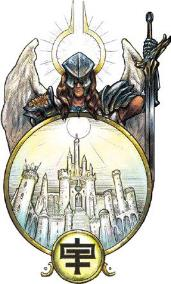
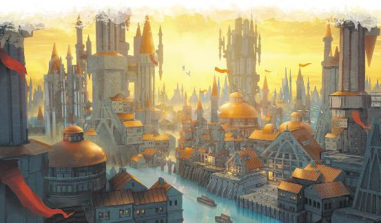

Exploring Eberron p165~168 Irian
原文基于July 2020. PDF Version: 1.04
翻译by Pany_Q（翻译版本：2020年12月08日）

*译注：Eternal Dawn先译永恒白昼，但是结合这篇看它强调的是万物伊始的“黎明”而不是大白天，故改。
在伊瑞安，鸟儿在肥沃的河谷中歌唱，开拓者们同心协力建设他们的第一个家园。再往里走，你会发现一个新生帝国的首都光芒四射，人群在街上欢呼庆祝。伊瑞安有许多位层，每一个位层都在以不同形式高奏生命的凯歌。伊瑞安是终将驱逐最黑暗夜晚的黎明，是春天战胜最寒冷的冬天的承诺。它是希望的堡垒，是生命总能得以延续的许诺。
多里乌斯·阿莱尔·ir’柯兰(Dorius Alyre ir'Korran)在他的《位面书典》(Planar Codex)中，将伊瑞安称为光明位面(Plane of Light)，确实如他所说，这里光明无处不在，以至于在伊瑞安不存在完全的黑暗。但不止如此，伊瑞安还是生命的位面，是正能量的源泉，是维持生命延续的力量，也是大部分治疗魔法的基石。
永恒黎明的光芒赐予生者力量。黑暗和疾病在这里没有立足之地，轻微的伤口会马上愈合。伊瑞安具有以下位面共通特性。
光耀之力(Radiant Power)：当生物施放一个1环或更高的恢复生命值或造成光耀伤害的法术时，看作比所消耗的法术位高一环。
黯蚀虚空(Necrotic Void)：生物若要施放一个造成黯蚀伤害的法术，必须先通过一个DC为10+法术的环级的施法属性检定。若检定失败，法术不会被施放，法术位也不会被消耗，但该动作视作已使用。
光明普照(Pure Light)：伊瑞安不存在黑暗。任何通常会产生黑暗的法术、效果或其他情况，都只会将光照水平降低为微光。
生命凯歌(Life Triumphant)：不死生物在攻击检定、属性检定和豁免检定上具有劣势。这对由伊瑞安维持的不死生物没有影响，比如艾伦诺的不朽精灵。
生命之光(The Light of Life)：伊瑞安的光芒可以恢复生命力，给予所有活物以下好处。这对不死生物或构装体没有效果；不过，诸如艾伦诺的不朽精灵这样的由伊瑞安维持的不死生物可以如同活着的生物一样从这些效果中受益。
标准时间(Standard Time)：时间流逝速度与物质位面的相同，并且在其各个位层中也是一致的。
大多数位面的形态都是固定的。举例来说，尽管每个凡人都会给达·库尔带来新的梦境，但该位面的总体结构是不会改变的。玛伯尔是个例外：永恒黑夜会从其他位面窃取碎片(fragment)，在将其腐蚀之后把它们变成自己的位层。如果不加以制约，玛伯尔迟早会吞噬所有现实。但随着永恒黑夜的吞噬，永恒黎明会重新创造。每当玛伯尔从其他位面撕下一块碎片，在伊瑞安就会诞生一个新的位面种子(planar seed)。最初，它只是一个小型的位层，具有伊瑞安的位面共通特性，它的居民是余烬(ember)和辉光(lumi)。随着时间的推移，这个位层会不断成长和演化，其环境和居民也会逐渐呈现出它将要填补的空缺的样子。一点一点地，它褪去伊瑞安的位面特性，而带上了其目标位面的特性；当它最终失去生命之光特性时，它与伊瑞安的联系就被切断了，它成为了另一个位面的一部分，取代被玛伯尔吞噬的那片区域。
位面种子并不能完美再现失去的碎片。余烬会变成当地生命的样子；不过，特别是对于从物质位面夺取的碎片，位面种子并不能重现建筑物或有自我意识的生物，它只是恢复土地和自然环境。举一个由于诸多原因并不太可能但也不是完全不可能的例子——假设哀伤故地是玛伯尔造成的，那么伊瑞安不会恢复在其中被杀的人或被破坏的建筑，但会让土地恢复生机，使其重新成为一个适宜生存的环境。
在大多数位面中，不灭者(immortals)不能繁殖，但祂们一旦死亡就会重生，其总数维持不变。但伊瑞安能打破这条规则，因为它要创造新的不灭者来补充被玛伯尔所腐蚀的那些(*译注：那玛伯尔的不灭者总数不是越来越多了吗？)。祂们起先是辉光和天使，但随着种子逐渐失去原位面的特性，这些不灭者会演化成目标位面的居民，从将将要成为的不灭者的模板中汲取个性。伊瑞安对它所填充的空缺不做任何判断，它可能为了填补撒法拉斯的一块碎片而创造出一支嗜血的恶魔军队。这些种子中的不灭者在与其最终位面完全结合之前无法离开祂们的位层，这样祂们就无法在伊瑞安作乱。但对于偶然闯进这样的层位层的爱管闲事的冒险者来说，祂们将是相当大的惊喜！
创造位面种子是伊瑞安居民的重要使命。不灭者监视并指导种子的形成，而辉光则照料余烬，并为成为新位面的居民的做准备。伊瑞安的天界生物很少干涉其他位面，因为祂们正在做的已经是祂们所能做的最重要的任务了。
伊瑞安的大多数居民属于以下类别之一：
伊瑞安生机勃勃。鸣鸟、兔子和其他生物在生命花园(the Garden)里自由徜徉。快乐的人群充斥着永恒之城(Amaranthine City)的街道。而且，花园里的兔子永远不会太多，永恒之城的市民也不会有挨饿的风险——也不需要游行示威。有时候，如果你用眼角的余光瞥过其中一个，你可能会看到它们另外的样子——一个发光的影子，就像泛着白光的朦胧的轮廓。
以上这些都是显能现象(manifestation)而不是真的活物，它们被称为余烬(ember)。每一个余烬都与一个星火(spark)相连；而每一个星火，都是一个灵魂的微小回声，都与一个活物相连。正是通过这种联系，凡俗生物(mortals)才能汲取灵感和希望，并与流淌于所有生物的正能量保持连接。余烬的外表近似于驱动它的星火所属于的那个凡俗生物，不过，余烬并没有完全的意识，也没有任何完整的记忆，仅仅只是回响着那个凡俗生物最明媚的快乐、最深沉的希望以及最伟大的事迹。在伊瑞安，在同一时刻存在的星火数量总是比余烬要多得多，伊瑞安会依据一个场景所需要的余烬的数量，从星火之池中舀出一些星火，然后将这些灵魂之光(译注：星火)塑造成接近其各自灵魂的样子(译注：余烬)。
当一个凡俗生物死去、其灵魂去往了杜鲁尔，其与伊瑞安的连线就被切断了。任何以其星火所驱动的余烬都会消散，而星火本身——凡俗生物生命中的希望和最闪耀时刻的精华——也会开始消逝。但是，死者的星火可以在完全消失之前融合在一起，创造出一个新的、独一无二的实体——辉光(lumi)。辉光由与构成余烬相同的正能量形成，但拥有真正的意识和生命。不像没有完全的意识也不知晓所拥有记忆的意义的余烬，辉光拥有自我意识，且每一个辉光的都是独一无二的个体。只不过，构成一个辉光的众多星火会给予这个辉光许多个凡俗生命的碎片，所以，冒险者们可能会遇到一个认得他们的辉光，而且还拥有一些某位已故朋友的记忆和特征。
辉光看起来是由凝固的光形成的，一般来说，它们的外形与形成它们的星火中最强的那个相似，通常展现为具有自我意识的生物的外形。它们最显著的特征是作为头部的、悬浮于躯干上方几英寸的光球。通常它们的头只是纯粹的光，但通过有意的控制，一个辉光可以塑造并维持住一张脸的样子。辉光的数据可以采用《怪物图鉴》中的祭祀(priest)的数据（或者，特别强大的个体可以采用《瓦罗怪物手册》中的战争牧师(war priest)的数据），不过他们不需要吃、喝、呼吸、睡眠，它们不会衰老，并且免疫毒素和疾病。当辉光的生命值降到0，它的身体会消解，构成它的星火也会消失。如果刚好有一个伊瑞安天使在附近，天使可以吸收这些星火，这并不会拯救辉光，但至少那些记忆会得以保存。虽然大多数辉光都是类人生物样貌的，但由诸如巨人或龙等其他生物的星火所形成的辉光也是有的，它们居住各自的位层中。
辉光以看护余烬为己任，它们相信，通过帮助余烬发挥各自的作用，就能够增强余烬所连接的凡人身上的光明。辉光帮助培育和照料位面种子，有些甚至会为了成为种子中的新生物而放弃自己原来的身份；它们相信这样做，就是在新生的位层种播种光明。在极少数情况下，辉光会为执行创造主(Architects)授予的任务而前往其他位面。辉光勇敢而富有同情心，总是寻求传播希望，并随时准备为更高的善而牺牲自己的生命。辉光可以自卫，但它们更愿意尽可能的激励、启迪他人，而不是诉诸暴力。
伊瑞安的不灭者们是光明和希望的精魂。伊瑞安以麒麟(ki-rin)的家园而闻名。这些威严的生物经常作为创造主的使者。每一个位面种子都分配有一只麒麟来监督情况、帮助辉光，让转变过程顺利进行。
伊瑞安也是天使的家园。伊瑞安的天使不像撒法拉斯的天使那样暴力，也不像西拉尼亚的天使那样个性分明，祂们是希望和慈悲的体现。伊瑞安的梵天神侍(deva)会协助辉光，帮助维持不同的位层；祂们是永恒之城的骑士和学者。梵天神侍经常会改变自己的外形，在一个位层内扮演多个角色，冒险者可能会以为遇到了很多个不同的人，但其实是同一个梵天神侍。同时，异界神侍(planetars)充当管理者和大臣的角色，而每一位创造主都有一位炽天神侍(solar)学者担任自己的辅佐。
伊瑞安的天使有着光芒形成的翅膀，如果愿意，祂们可以将翅膀隐藏起来。在真实形态下，祂们是没有明显种族的发光人形生物，但也可以选择变成观看者种族的常见形象。梵天神侍还拥有随意变化成特定形态的能力。
创造主是伊瑞安最强大的精魂。每一位创造主都体现了位面的某一个方面，并掌管位面中的一个区域，如后文的“位层”节所述。祂们是拥有强大的智慧和力量的独一无二的天界生物，不过祂们把大部分时间和精力都花在位面种子上——指导种子的成长，摆平出现的问题，并添加一些个人的修饰。位面种子从创造主的国度(realm)中涌现出来，不断扩张，直到它们最后脱离并加入目标位面。
创造主的力量很大程度上被限制在祂们的国度之内。他们不能直接干预物质位面，不过祂们可以与邪术师合作（作为天界宗主）或派遣辉光。通常，创造主干预物质位面都是为了融合位面种子，或是为了检查被玛伯尔夺取了碎片的地方。
伊瑞安永远是早晨，天空晴朗，太阳定格在天空中，月亮芭拉卡丝(Barrakas)隐约可见。这个位面上包含着许多位层，而且总有新的位层不断生长出来。青翠的山谷、扩张中的城市、新建的农场，位层的主题虽然各不相同，但这里的故事总是关于生命、成长和希望。事物在发展，人口在繁荣，未来是光明的。虽然伊瑞安有很多自然环境，但正是这种积极乐观使它们与拉玛尼亚的自然环境区别开来。伊瑞安是对生命的赞美，而拉玛尼亚注重的是自然界不可驯服的原始力量，往往让更散发着威胁和野性。
国度中的位层是相连的，每个国度由一位创造主统治。各位层的居民和整体主题都反映了该创造主的影响。所以，生命花园(the Garden)的所有位层都强调田园风光，而那些与永恒之城(the Amaranthine City )相连的位层则反映了其蒸蒸日上的帝国权威。有些位层以物理屏障为边界，但大多数位层要么是无限循环的，要么边界是一圈温暖的迷雾，任何误入迷雾中的人都会在该位层的其他地方重新出现。在一个国度内的各位层通常通过物理形式的传送门相连接，可能是一扇巨门，或是一池光芒。要在领域之间移动需要异界传送(plane shift)法术或举行一个该国度特定的仪式。这些仪式不一定是魔法的，它们只是一些必须了解的秘密。如果你在永恒之城，而你想去生命花园，你要做的就是种下一朵花，然后思考它的美丽，你的思绪会带你前往那里。
位面种子从国度中萌芽。处于初期阶段的位面种子只是不具有明确主题的小型的位层，但会逐渐扩展并获得它们将要成为的位面的性质和特性。因此，你可能会偶然进入一个复制了一片杜鲁尔的墓穴(Catacombs)或代表了撒法拉斯的冲突的位层。不过，这些位层还并没有完全成型——一旦它们生长完成，就会转移到它们的目标位面去——所以伊瑞安的杜鲁尔墓穴的种子还不具有杜鲁尔本身的捕获特性。
下面给出三个国度作为例子，当然除此之外伊瑞安还有更多国度。
永恒之城是一座巨大都市，占据整整一个位层的。它是一个欣欣向荣的帝国的首都。镀金的旗帜迎风招展。穿着武装的天使和飞马巡逻队从头顶经过。健康快乐的人们在街头欢笑。工匠们创造出一幅描绘着辉煌胜利的马赛克壁画。这个帝国所传达的信息并不是压迫，而是潜力。在这个帝国中，所有的公民都繁荣兴旺，所有人都有平等的机会。人们感到自豪，城市充满了奇迹，未来是光明的。
普遍认为，永恒之城是伊瑞安的心脏。永恒之城的黎明女皇(Dawn Empress)是最初和最强大的创造主。她的存在原则是成长，是让潜力得以全部释放的机会，在她的国度中的所有位层都反映了这些原则。她的帝国不是由征服驱动的，而是由探索推动的——通过发现新的土地和机会，就像凡人总能从内在中找到新的天赋和机会一样。黎明女皇的外形是一个被光芒包裹的天界生物，不过她可以变成任何类人生物或天使的样子。她主持庆典，照料她的子民，不过她把大部分时间集中在培育她的位面种子上。她偶尔会与凡人合作，通常是邪术师；虽然她可能会有与位面种子或对抗玛伯尔的特使相关的任务，但她也会给她的代行者一些旨在帮助他们自身成长和提升的任务。
附属于永恒之城的位层反映了其扩张和发现的主题。这些位层中可能有设在充满自然风光的处女地上的前哨站，或可能有富饶肥沃的农场和庄园，这些地方由余烬居住，星火和梵天神侍则帮助贯彻位层的主题。
生命花园正如其名，它是一个充满植被的巨大动植物园。它包含了所有能在物质位面找到的植物，以及许多在物质位面找不到的植物。这里有蜿蜒的小径，宁静的水池，修剪奇妙的灌木，还有复杂的树篱迷宫。与拉玛尼亚的荒野不同，这里是非常精心培育的。园内弥漫着一种宁静、美丽的以及生命所能创造的奇迹的氛围。
生命花园是创造主生命园丁(the Gardener)的国度，他的存在原则是生命。他的外貌是天使和植物的混合体，比起树人(treant)更接近人形，他皮肤是树皮，胡须是树叶，戴着花朵编成的王冠。像所有的创造主一样，他投身于他的位面种子，但他也花时间在生命花园里游荡，照料花园，欣赏美景。他欣赏那些养育和治疗他人的人，他也期望与他打交道的凡人具有这样的品行。
生命花园国度里的许多位层展示着各种丰饶的主题和生命的胜利。有个别的位层比起伊瑞安的其他地方略显黑暗，不过即使在最黑暗的角落里仍然充斥着昏暗光照——这些都反映了生命终将战胜困难的道理。城堡废墟所传达的信息并不是要让人沉浸于毁灭，而是要让人看到残垣断壁上盛开的花朵。该地区的大多数余烬呈现动物的形态，而麒麟是这里最常见的天界生物。
庇护所是一座巨大的堡垒式修道院，同时它也有作为疗养地的一面。这里充满了宁静的小树林、令人放松的浴场以及休息和思考的地方。堡垒的城墙并不代表潜在的冲突，而是在诉说着这里的绝对安全——在它的城墙内，你是安全的，不会受到任何威胁。庇护所中有可以治疗你的身体伤痛的治疗师，有可以谈论心灵问题的调解员，还有可能不知道你需要的答案、但可以为你指明正确方向的智者。这不是一个发生冒险的地方，而是让你从伤痛中恢复并计划下一步行动的地方，你知道你是安全的，每个问题都会有答案。
阿拉姆是庇护所的创造主，体现着希望的概念。她是一位睿智的建议者，虽然她可能并不总是有答案，但她帮助人们以新的方式看待他们的问题，确信所有的问题都可以解决。她是伊瑞安最好的治疗师，很少有她不能治愈的伤痛，也没有她不能破解的诅咒。避护所的服务是不收取金钱的，但阿拉姆会要求受益者以另一种方式回报，他们要给需要的人带去希望；在还清这笔人情之前，他们不会被允许回到避护所。虽然阿拉姆不是神，但生命牧师可以说他们的职业特性来自于避护所的训练，他们的力量与伊瑞安的力量息息相关。
虽然阿拉姆的国度中不是所有位层都能提供像避难所那样的安全和救济，但它们都能给予慰藉和希望。它们没有西拉尼亚的绝对安宁，但它们让人感到希望。伊瑞安比不上西拉尼亚的无限集市(Immeasurable Market )，所以如果你要找的是商业交易，苍蓝天庭提供了更多选择。但对于追求在位面中休闲度假的冒险者来说，避护所是无可比拟的。

以下是伊瑞安影响物质位面的几种方式。
伊瑞安的显能区域是正能量的泉源。植物和动物在这些区域茁壮成长，这里的人们不太会沉浸在负面情绪中，更容易拥抱希望和快乐。伊瑞安显能区通常具有一个或多个该位面的共通特性。具有光耀之力特性的伊瑞安显能区可以支援治疗法术，并能支持在任何其他地方都无法实现的仪式或建造的超凡奇械(eldritch machine)。特别值得一提的是，艾伦诺的死者之城(City of the Dead)就是建立在一个强大的伊瑞安显能区域上的，不朽评议会正是靠这个显能区维持的。
尽管伊瑞安显能区域很少能完全展现像伊瑞安的生命之光特性那样全面又快速的治疗效果，不过，它通常能够给予下列所有好处。
由于上述所有原因，伊瑞安显能区是一种宝贵的自然资源，村庄、城镇或乔拉斯克治疗中心经常依此而建。伊瑞安显现区很少是通往位面的传送门，前往伊瑞安通常需要异界传送(plane shift)或类似的魔法。
当伊瑞安相接时，生命绽放。健康和生育力都得到增强，正能量自由流动，所有活着的生物都被丰盈的希望感所充满。在伊瑞安相接时，光耀之力特性在整个艾伯伦都起效，所有生物在对抗疾病、毒素和恐惧的豁免检定上都具有优势。
当伊瑞安远离时，色彩看起来变得暗淡，一种精神上的麻木感弥漫整个世界。所有生物在对抗恐惧的豁免检定中都具有劣势，都拥有对光耀伤害的抗性。此外，任何恢复生命值的效果——包括法术和花费生命骰——都只能恢复通常数值的一半。不过，生物在完成长休后，仍然会恢复全部的生命值。
传统上，每三年一次，伊瑞安在艾尔月相接十天；同样每三年一次，，伊瑞安在西菲洛斯月远离十天；相接与相离间隔一年半。
艾伦诺居民会利用伊瑞安的能量来创造许多工具，但工业并不是伊瑞安的强项，所以来自该位面本身的遗物较为罕见。不论是来自位面本身的还是单纯的汲取它的力量，物品都与正能量的效果相关：治愈、造成光耀伤害、制造光明、带来希望，或克服恐惧。一张能提供前往庇护所的单程票的卷轴将是无价之宝。
生长在伊瑞安显能区域的植物往往具有非凡的特性。艾伦诺的许多特有木材只有在伊瑞安显能区域才能生长——比如活化木(livewood，译注：制作战俑主要材料之一)。乔拉斯克家族为了制作他们的治疗药剂，需要长期稳定的获得一种名为阿拉姆之冠(Araam's crown)的具有显著医疗效果的花。还有另一种名为黎明荣耀(dawn's glory)的花具有令人心情愉悦的特性，可以被用来制作一种通常被称为愚者的希望(fool's hope)或勇气水(liquid courage)的药物。这种药物能暂时给予免疫恐惧的效果，但副作用是让人更容易做出危险和愚蠢的行为；为了降低使用者跳桥的风险，这种药物在萨恩是严禁物品。
乍一看，伊瑞安似乎好得不像真的。它的居民很善良，而且每一轮都能治愈你。还能有什么问题？
从最基本的层面上来说，没有任何问题。伊瑞安就是字面意义上的希望的力量，是光明战胜黑暗的体现。虽然某些疾病可以被视为与成长的概念相关联，但伊瑞安并不像，举个例子，达安维那样具有黑暗的一面。不过，它也有一些明显的限制。比如，伊瑞安并不是一个容易到达的位面，因为它的显能区域不能作为传送门。所以，虽然庇护所对于任何人来说都是一个完美的栖身之处，但首先你得设法到达那里。而且庇护所还有一个限制，你可以自由造访一次，但在那之后，你得帮助过别人，阿拉姆才会再次为你敞开庇护所的大门。
这里有几个点子可以深入探讨。首先是毫无根基的希望可能是危险的。辉光或梵天神侍会出于本性而无差别地传播希望，这可能会鼓励人们去挑战他们本应逃离的敌人。你也可以深入挖掘伊瑞安的力量被凡人滥用的可能，比如乔拉斯克家族为了种植阿拉姆之冠强占伊瑞安显能区域，或者犯罪组织非法贩卖愚者的希望。
无法愈合的伤口：也许某个反派挥舞的玛伯尔镰刀造成了魔法或休息都无法治愈的伤口，或者一个鬼婆对冒险者下了可怕的诅咒。据说伊瑞安的庇护所能治愈所有的伤痛。但是，冒险者们将如何到达永恒黎明，而阿拉姆又会向他们提出怎样的要求作为回报呢？
越过坟墓：当冒险者们与一位辉光相遇时，它向他们打了个招呼。它拥有某位曾经救过角色之一性命的英雄的记忆，而且这份人情从未偿还；辉光要求冒险者们协助它当前的任务来予以报答。这可能是队伍在旅行途中受到的恩情，甚至可能是角色背景故事中的东西；你可以要求玩家讲述其角色如何曾经被某个人救过一命，增加这个故事的深度。
新生国度：在两个国家或敌对部族的交界上，某处贫瘠的荒地突然变成了一片神奇、肥沃的绿洲。这是一颗位面种子生根发芽的结果。这片土地不仅拥有引人注目的植被和资源，它还成为了伊瑞安的显能区域——这本身就是一种宝贵的资源。对领地的争夺可能会带来灾难性的后果；冒险者们能阻止流血吗？而创造主又是否在这片种子区域隐藏了什么秘密或神器？